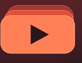
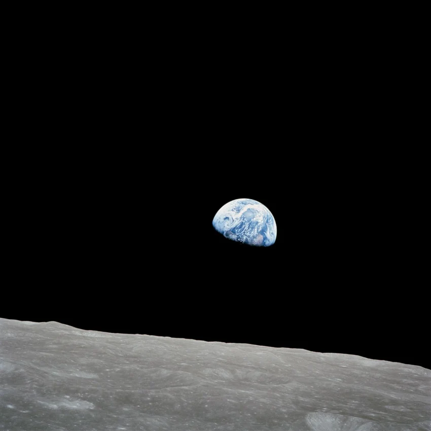

Connect your channels
Set up your own Google TV client in Free Tube. Scan the QR code and approve read-only YouTube access on your phone. You can also follow public channels locally.
Sign-in instructions ↗
Free TubeFree Tube brings your YouTube subscriptions to Apple TV. Discover new creators and keep watching while you browse.
Build for Apple TV
Apollo 8 through the lens
Select a title to open the player. Scroll inside Home to explore both shelves.
Illustrated demo · Sample librarySet up your own Google TV client in Free Tube. Scan the QR code and approve read-only YouTube access on your phone. You can also follow public channels locally.
Sign-in instructions ↗Move down to Recommended and Creators to explore. Move sideways through a row. Press Back to open the sidebar and Right to return to your tile.
Press Up during playback to choose a speed or Watch while browsing. The corner player keeps your place and speed as you search. Choose Expand video to return.